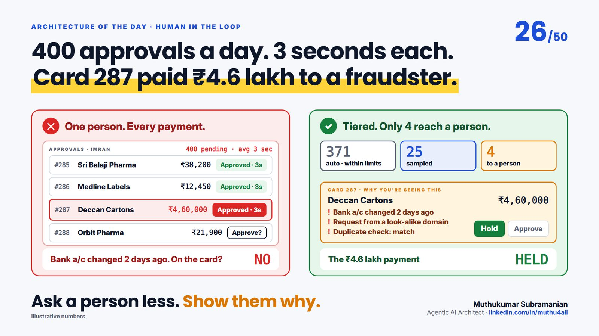
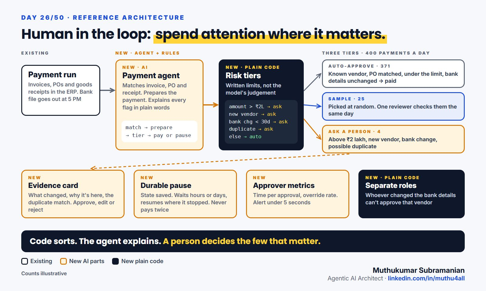
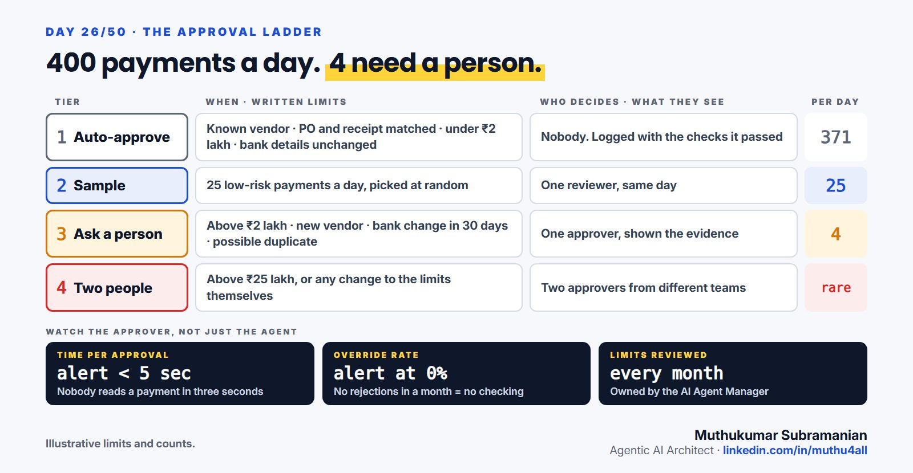

Your AI Agent Asks Before Paying. Your Team Clicks "Approve" 400 Times a Day.
By Muthukumar Subramanian · Agentic AI Architect

Thursday, 4.40 PM, at a pharma distributor in Hyderabad. Imran has 400 approval cards in his queue. Each one says the same thing: vendor, amount, "Approve?"
He averages three seconds a card. Twenty minutes, then home.
Card 287 is ₹4.6 lakh to Deccan Cartons, a supplier they've paid for six years. Two days earlier, an email from a look-alike domain had changed Deccan's bank account. The card didn't say that. Imran clicked Approve, like the 286 before it. (Imran and the company are composites, and every number here is illustrative.)
The agent did exactly what it was designed to do. It asked. Imran did exactly what the design trained him to do. He clicked.
400 approvals a day isn't oversight. It's a rubber stamp with a login.
The architecture today
Human in the loop means the agent's workflow has places where it stops and waits for a person:
→ The agent does the work: matches the invoice, prepares the payment.
→ At a checkpoint, it pauses, saves its state and sends an approval card.
→ A person approves, edits or rejects, and the agent resumes from exactly where it stopped.
On Day 21 we gave a single agent hard limits, with anything above ₹2 lakh going to a person. Today is about what happens at that person's desk.
This isn't new to Indian finance. Banks have run maker-checker for decades: one person enters, another approves. Most agent projects copied it literally. The agent became the maker, a human the checker, for every transaction.
But maker-checker worked because a human maker produced forty entries a day, not four hundred. When the maker gets ten times faster and the checker doesn't, the checker stops checking. It's called automation bias: we trust the machine because it's usually right. The EU AI Act names it in Article 14 and asks that people overseeing high-risk AI stay aware of it.
Too many approvals is as unsafe as none.

Where AI plugs in now: risk-tiered approvals
Don't remove the human. Spend the human's attention where it matters.
→ Auto-approve within written limits. Known vendor, PO and goods receipt matched, amount under the limit, bank details unchanged. In the illustrative queue, that's 371 of the 400.
→ Sample the routine. A person reviews 25 random low-risk payments a day. That catches the fraudster who learned your limit and splits ₹4.6 lakh into small invoices.
→ Ask a person only for the unusual. Above the threshold, a new vendor, bank details changed in the last 30 days, or a possible duplicate. That's 4 cards, not 400.
→ Show the evidence, not just "Approve?" The card says why it's there: "Bank a/c changed 2 days ago, request came from a look-alike domain. Duplicate check: matches INV-3318, paid 9 Nov." Imran would have caught that in three seconds too.
→ Measure the approver. Track time per approval and how often approvers override the agent. If approvals drop under five seconds, or nobody has rejected anything in a month, alert someone. A checker who never says no isn't checking.
→ Separate the roles. Whoever changed a vendor's bank details can't approve payments to that vendor.
→ Pause durably. The agent may wait two days for an answer. It mustn't forget what it was doing, or pay twice when it wakes up.
It's Track B's refund lesson, straight-through within limits, applied to the approver.
A human in the loop should be the last line of judgement, not the first line of typing.

Where it's heading with agents
In two or three years, I expect people to approve policies more than payments. You'll sign off the rules once a quarter: limits, vendor tiers, what counts as unusual. The agent will apply them thousands of times a day, and you'll review the samples and the exceptions.
Tiers will move with track record. Two clean years earn a vendor a higher auto-approve limit; a changed bank account drops it to zero for a month. I'm less sure how fast auditors will accept "we sampled 25" in place of "a person approved all 400". That conversation is only starting.
Watch it work
The same 400 payments, two ways.
👉 [GIF: A-day26-4-in-article-approval-flood.gif]
Caption: First, every card goes to one person, who approves the risky one in three seconds. Then the tiered version: 4 cards reach a person, with evidence, and the ₹4.6 lakh payment is held. All figures illustrative.
Pros
→ The approver reads 4 cards properly instead of skimming 400
→ Fraud and duplicates surface with the reason attached, not buried in a queue
→ You can show a regulator who approved what, why, and how long they spent
Cons
→ Someone has to write the limits down, and that's a hard meeting
→ Sampling feels riskier to auditors than "100% approved", even when it isn't
→ Durable pause and resume is real engineering: state, timeouts, reminders, no double payments
The hard part
The threshold is a business decision dressed up as a technical one. Too low and you're back to 400 cards. Too high and a ₹1.9 lakh fraud sails through. There's no right number on day one, only one you review every month.
That's the job of an AI Agent Manager, a role still taking shape: the person who owns which actions an agent takes alone and which need a human, the way a finance head owns delegation of authority. An AgentOps engineer, who runs agents in production the way an SRE runs services, watches the approval-time dashboard and gets paged when approvals go under five seconds. The titles are still settling. The accountability isn't.
And the threat is real. The FBI's 2025 Internet Crime Report counted about $3 billion lost to business email compromise in one year. Changed bank details are its oldest trick.
The opportunity
Every regulated business adding agents needs this layer: banks, NBFCs, insurers, hospitals, and the payment teams of large companies. The RBI's FREE-AI framework, from August 2025, already asks for human oversight in medium- and high-risk AI uses. Nobody wants that to mean 400 clicks.
That's the market: approval layers for agents. Evidence cards, risk tiers, approver metrics and an audit trail, sold per workflow. Next to it sits a services business, "approval design": sit with the finance team, count the approvals, find the four that matter, write the limits.
Tools to try
LangGraph interrupt() with a checkpointer to pause and resume · Temporal signals for waits that survive restarts · Microsoft Copilot Studio multistage approvals (in preview) or Power Automate approvals · Slack Block Kit buttons or Teams Adaptive Cards for the approval card itself.
Your turn 👇
Your payment agent: a person approves every payment, or only the risky ones? Every or risky?
Tag the person in your team who approves the most things in a day.
Day 26 of 50 · follow along. Tomorrow: Day 27 · Your AI Agent Connected to One New Tool. Now It Can Reach Your Customer Database.